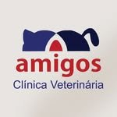

Serviços para cães e gatos
Consultas, check-ups, vacinação, exames, cirurgias, castração, atendimento especializado para felinos e farmácia veterinária.
Endereço: Av. Pres. Kennedy, 16930 - Real, Praia Grande - SP
Atendimento: segunda a sábado, das 10h às 18h